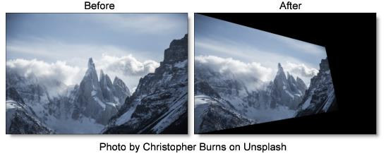

S_WarpTransform
Description
Warps the image by a combination of linear transformations including scale, shear, zoom, rotation, and translation.
The S_WarpTransform filter comes from the Emmy award winning Boris FX Sapphire filter set.
Category
Image.
Controls
Presets
To select a preset, pick one from the Presets window.
Scale X & Y
Scales the relative horizontal or vertical size of the image.
Shift X & Y
Translates the image.
Z Dist
Scales the distance of the image. Values greater than 1 move it farther away and make it smaller. Values less then 1 move the image closer and enlarge it. Note that Scale X and Y also scale the size of the image, but in an inverse way and on each axis.
Rotate
Rotates the image by the specified angle in degrees.
Swivel
Rotates the image left or right in 3D about the vertical axis.
Tilt
Rotates the image up or down in 3D about the horizontal axis. You can use Swivel and Tilt together to rotate about arbitrary diagonal axes.
Perspective Amount
Controls the amount of lens telescoping while applying Swivel and Tilt. Increase for more 3D perspective.
Shear X & Y
Shears the image horizontally or vertically.
Wrap X & Y
Determines the method for accessing outside the borders of the image.
No
Creates black beyond the borders.
Tile
Repeats a copy of the image.
Reflect
Repeats a mirrored copy. Edges are often less visible with this method.
Filter
If enabled, the image is adaptively filtered when it is resampled. This gives a better quality result when parts of the image are warped smaller.
Crop Input Parameters
These 4 parameters: Crop Top, Crop Bottom, Crop Left, and Crop Right select a rectangular subsection of the image. If the Wrap parameters are set to No, the exposed borders will be transparent. If the Wrap is set to Tile or Reflect, the image is wrapped on the newly cropped borders to fill the frame. This can make it easier to avoid artifacts due to distorting an image with bad edges.
Show Shift
Enables/disables the on-screen control for adjusting the Shift parameter.